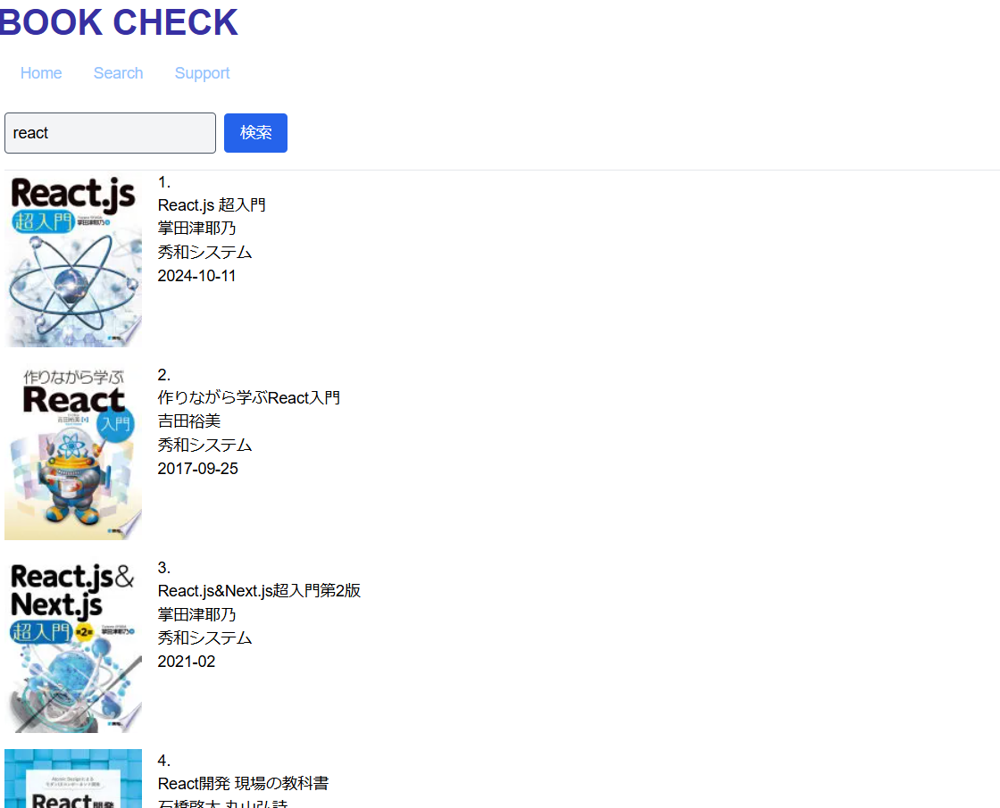
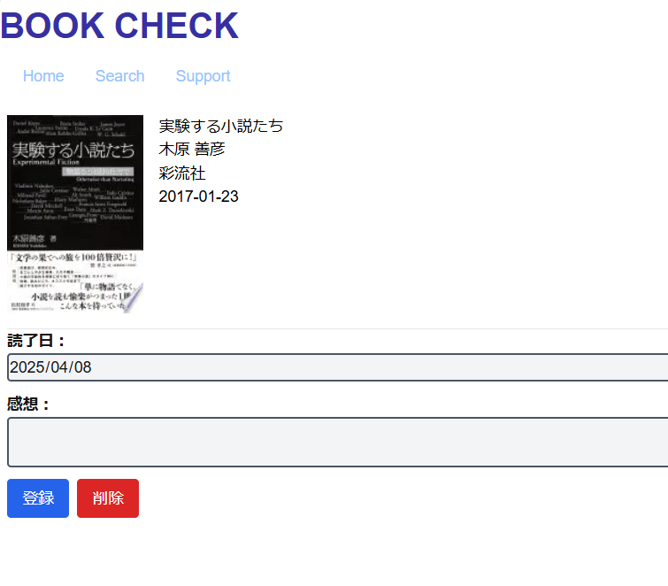

BOOK CHECK（読んだ本を保存するアプリ）
開発環境
TypeScript / Next.js / JavaScript / TailwindCSS / GitHub / Prisma / Visual Studio Code
-
概要
制作時間 80時間
OUTLINEアプリケーションの概要
オリジナルアプリケーションとして、勉強で使用した仕様書を保存できるアプリです。
主な機能は、Google.BookのAPIを取得して検索を行う機能と検索した本を保存する機能です。
トップページにアクセスすると、これまで自身が読んだことのある本を一覧で確認できます。
画像をクリックするとその本の詳細ページに遷移し、APIをたたきその本に関する内容が表示されます。
Searchのボタンをクリックすると検索ページに遷移し、Google.BookのAPI内のデータを検索することができます。
-
開発に至った経緯
本を読むことが趣味でこれまで自分が読んできた本をまとめて保存ができる機能があればこれまでの読書の軌跡が分かると考えました。
そのため、チャットGPTでBOOKのデータを扱っているAPIをリサーチし、実装しました。
-
開発で工夫したこと
1つ目は、APIを使用することで既存のデータを使用することができ、アプリ使用者の手間を削減しました。
2つ目は、本ごとにコメントを残すことができるの機能で、初読時の思いや感想・内容をコメントとして残すことができるようにしました。
-
今後実装したいと思っていること
多くのユーザーに使用していただけるように機能の需要を高めたいと考えます。
1つ目が、Google.BookのAPIにはない本もほかのAPIを使用し、検索できるようにしていきたい。
2つ目が、新着本や人気ランキングを実装し、需要を高めていきたい。